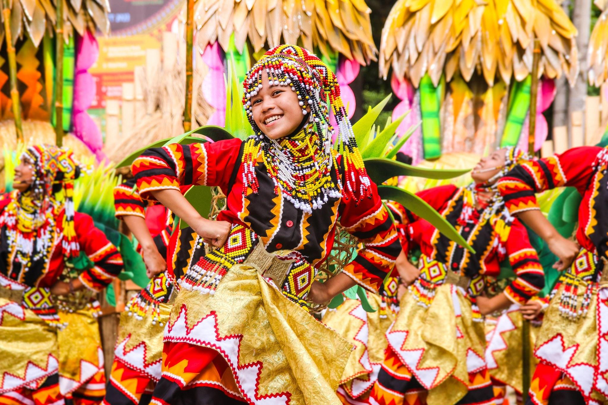
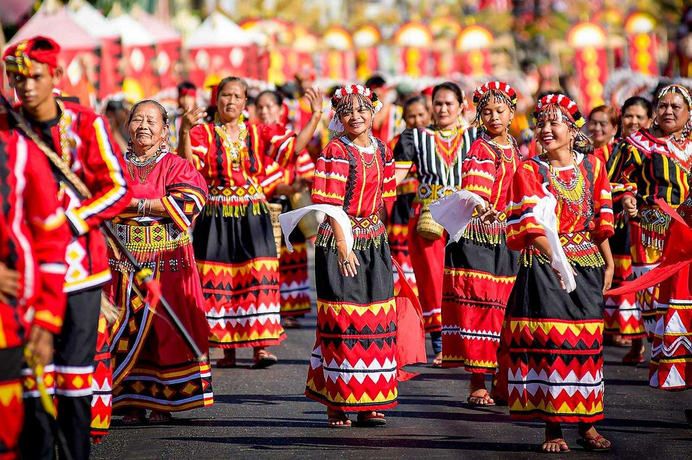
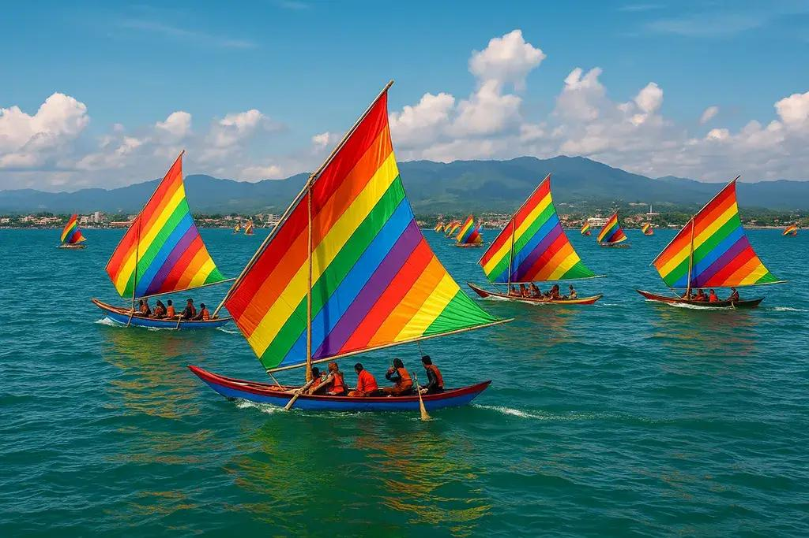

Festivals



Mindanao celebrates many festivals that showcase its indigenous heritage, religious traditions, agricultural abundance, and cultural diversity.
Popular festivals:
- Kadayawan Festival (Davao City) - A thanksgiving celebration for the city's abundant harvest, indigenous cultures, and natural resources.
- Kaamulan Festival (Bukidnon) - Celebrates the traditions and cultural heritage of the seven indigenous ethnolinguistic groups of Bukidnon.
- Higalaay Festival (Cagayan de Oro) - A celebration honoring the city's patron saint, Saint Augustine, featuring street dancing and community activities.
- Zamboanga Hermosa Festival (Zamboanga City) - A celebration honoring Our Lady of the Pillar, featuring cultural performances and colorful traditions.
- Tuna Festival (General Santos City) - Celebrates the city's fishing industry and its importance as a major tuna-producing center.
- Shariff Kabunsuan Festival (Maguindanao del Norte) - Celebrates the arrival and influence of Islam in the region through cultural activities and performances.